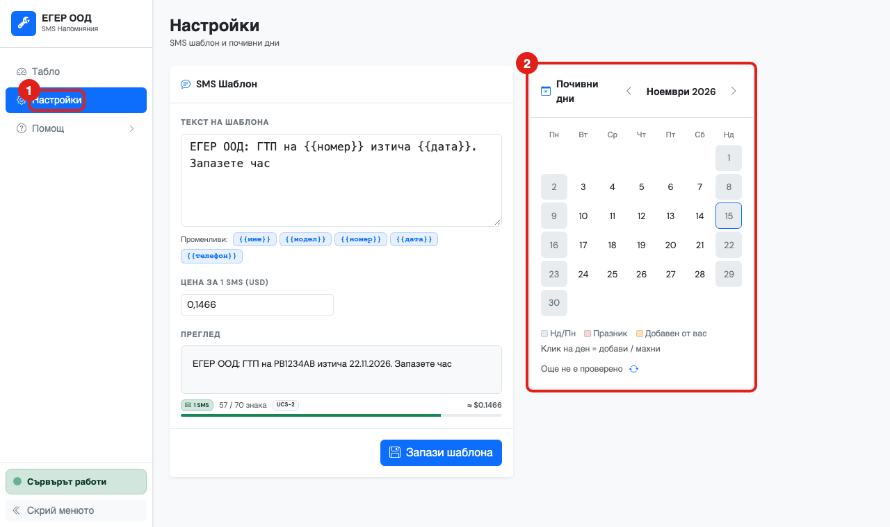
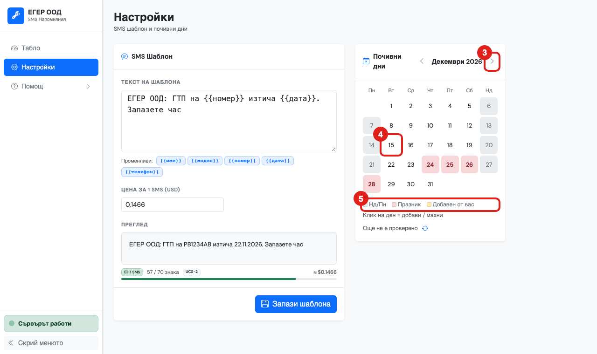

За печат или PDF: натиснете Ctrl + P
Почивни дни и защо SMS идва по-рано
Денят за SMS е 7 дни преди датата, на която изтича прегледът.
Ако този ден е почивен, програмата избира по-ранен работен ден. Никога по-късен.
Почивни дни: неделя, понеделник, официалните празници и дните, които вие добавите.
Защо SMS идва по-рано
- Прегледът изтича във вторник, 15.12.2026.
- 7 дни преди това е вторник, 08.12. Работен ден. SMS е на 08.12.
- Прегледът изтича в понеделник, 14.12.2026.
- 7 дни преди това е понеделник, 07.12. Почивен ден. Неделя, 06.12, също. SMS е в събота, 05.12.
- Прегледът изтича в четвъртък, 31.12.2026.
- 7 дни преди това е 24.12, Бъдни вечер. Празник. SMS е в сряда, 23.12.
В таблицата денят за SMS е в колоната „Напомняне“. SMS-ът винаги пише истинската дата на изтичане.
Отворете календара

- В лявото меню щракнете Настройки. 1
- Вдясно е календарът „Почивни дни“. Той показва един месец. 2
Не виждате календара? Екранът е тесен. Календарът е под „SMS Шаблон“. Превъртете надолу.
Добавете почивен ден

- Щракнете стрелката , докато видите месеца, който ви трябва. 3
Стрелката връща един месец назад.
- Щракнете деня, в който няма да работите. 4
Денят става оранжев. Програмата го запазва веднага. Няма бутон „Запази“.
- Долу вдясно излиза зелено съобщение, например 23.12.2026 е почивен ден. 2 напомняния са преместени.
- Погледнете цветовете под календара. 5
Сиво = неделя и понеделник. Червено = официален празник. Оранжево = добавен от вас.
Махнете почивен ден
- Щракнете още веднъж оранжевия ден.
Денят пак е работен. Зеленото съобщение казва колко напомняния са преместени.Сивите и червените дни не се махат. Щракнете ли ги, излиза съобщение, че денят вече е почивен.
Неделя и понеделник
- Искате друг почивен ден всяка седмица? Обадете се за помощ.
В календара това не се променя.
Готово. Какво стана?
- Програмата премести напомнянията веднага. Зеленото съобщение казва колко.
- Напомняне, което сега е днес или преди днес, е „За днес“. Погледнете картата „Очакващи SMS“ (тема 5).
- SMS, което вече е пратено, остава пратено. Второ SMS няма.
- Официалните празници програмата знае сама. Не ги добавяйте.
Ако нещо не стане
- Щракнахте грешен ден.
- Щракнете го още веднъж. Той пак е работен.
- Официален празник не е червен.
- Програмата проверява празниците в интернет веднъж месечно. Щракнете иконата под календара. Няма интернет? Добавете деня сами (стъпка 4).
- Текстът до иконата е червен.
- Проверката в интернет не успя. Празниците от закона са в календара. Опитайте пак по-късно.
- Излиза червено съобщение „… е отворен в Excel“.
- Денят не е запазен. Затворете файла „клиенти.xlsx“ в Excel. Щракнете деня пак.